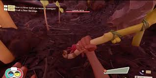

Home
building
killing bugs
crafting
Friends
researching items
fighting bosses
this one is going to be short because it's just one thing
if you wont to stay alive you need to know how to parry you may have heard of parrying or not but I'm going to help you. To parry if you are on xbox it's (LT) if you are on PS5 it's (L2) if you are playing on PC you have to click or hold (right mouse button) if your playing on Nintendo Switch it's (L)
this is what it should look like
